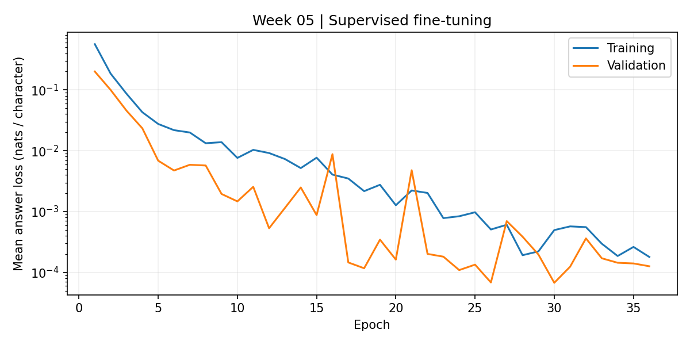

Week 05 | Zhechen Tu | Supervised fine-tuning Week 04 Transformer | 36 epochs | selected epoch 30 Evaluation: held-out sentences / greedy generation / exact answer + newline Model Exact matches Answer-only NLL base 0 / 243 3.330576 sft 243 / 243 0.000051 First held-out sentence: I felt delighted near the schoolyard after lunch. Name the time of day. base='the with the w' SFT='afternoon' gold='afternoon' Name the mood. base='the the will t' SFT='happy' gold='happy' Name the place. base='the the the wi' SFT='school' gold='school' Scope: one English sentence template, known cue words and instructions. This test measures new cue combinations, not general conversation.

Source: saved model predictions and training history.